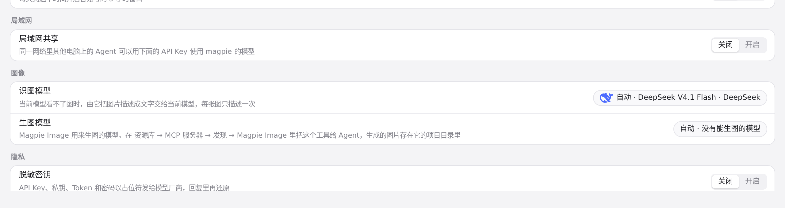
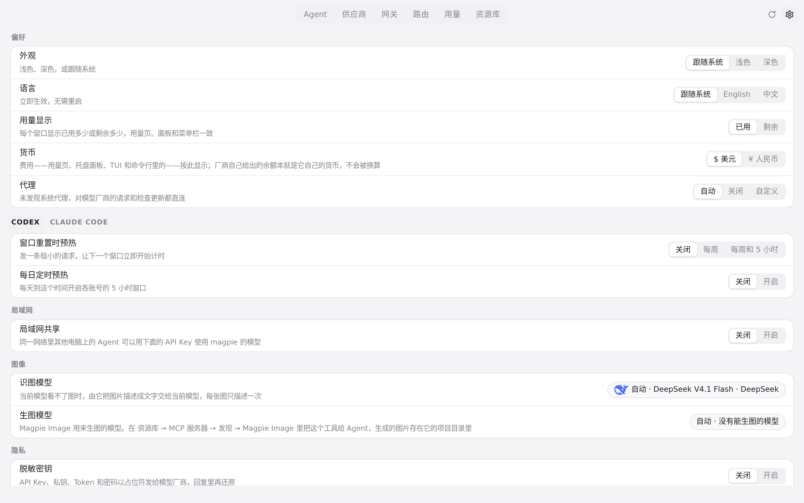

#307 界面预览
commit c69fa09 · 回到 PR · 设置页的 WebDAV 同步行在关闭时会按当前配置的 keys/agents/library 开关生成描述，并在每次重新打开设置页时重新读取磁盘上的 WebDAV 配置；默认关闭文案现在明确写出“供应商（含 API Key）”。
红线是鼠标走过的轨迹，红色圆环是一次点击；底部文字是这一步在做什么。空格暂停，← → 逐段查看。

WebDAV 同步关闭文案 · 设置页里 WebDAV 同步行的关闭状态描述

WebDAV 同步关闭文案 · 打开的 WebDAV 同步表单，默认开关全开